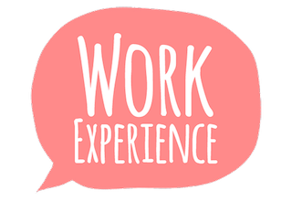

Below this text, i attached my work experience that i have been through. Although i don't really work or cooperate with the real company, the experience that i had during the process is the same as the real working field.
2017-2018
I joined multiple organization. One of them is this Football organization that i handled. This
2016 - 2017
Managed all of the bussiness related to camera. I took part of tkaing the footage, editing it and the final part.